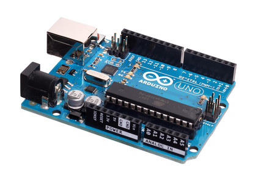

Acerca de mi
Soy deportista, juego basquetball y entreno Taiwoondo, me gusta los dulces picantes, soy independiente hago lo mejor por ser un buen estudiante, me gustan las frutas como, la mandarina, la naranja, las uvas y las manzanas, juego debes en cuando vide juegos y descansos de poco tiempo por el cansancio no soy habitual al desvelo pero lo hago cuando estoy aburrido. En mis tiempos libres abituo ver peliculas de terror, accion, y comedia o a lo mucho encuentro una buena serie tambien me gusta escuchar musica me decestresa de manera que mi mente se relaja.

Creado por: Carlos Javier Perez Morales